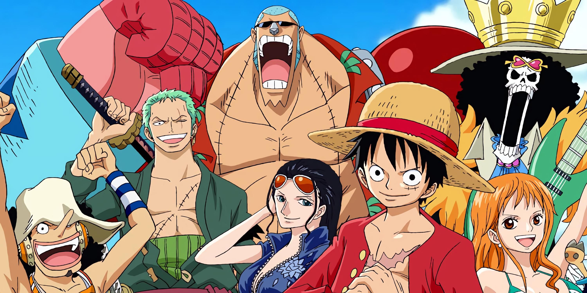

About Luffy
Monkey D. Luffy is the founder and captain of the increasingly infamous and powerful Straw Hat Pirates, as well as one of its top three fighters.
The Straw Hat Crew
Luffy's Characteristics
- He has the power of the Gomu Gomu Fruit
- He's clumsy
- He loves food!
Friends
As a result of Luffy's choice in who joins the crew, the Straw Hats are notable for being one of the most varied, if not bizarre, pirate crews in the One Piece world.